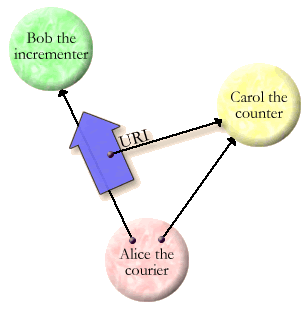

| |
Introducing |
||||||
This section shows how to use E for secure distributed programming. Distributed E programming starts by using the "introducer", which should be in your initial name-space:
?? in new vat VatA ? pragma.syntax("0.8") ? introducer # value: <Off The Air>
When you type this in, you should see either "Off The Air" as above, "On The Air", or "null". If you see "null", you aren't using full E, but rather a space-local subset of E. As explained on the download page, the space-local subset is the subset of E supporting only conventional non-distributed programming.
Normally you'll see "Off The Air", which means your E should be capable of distributed object programming, but it hasn't been turned on yet. To turn it on, say:
? introducer.onTheAir() # value: ["3DES_SDH_M2", "3DES_SDH_M"]
which can take anywhere from 2 seconds to a minute to respond, depending on your platform. Assuming this returns without indicating a problem, printing the introducer should now look like:
? introducer # value: <On The Air ["3DES_SDH_M2", "3DES_SDH_M"]>
(The list in square brackets is the set of protocols that your E process is willing to speak. If you see ["AUTH_SDH_M", "NONE_SDH_M"] instead of ["3DES_SDH_M"]or ["3DES_SDH_M2", "3DES_SDH_M"], you are running daffE rather than E, and your process will only be able to communicate with other daffE processes. As explained on the download page, daffE was an insecure variant of E, built domestically and crypto-crippled to appease export bureaucrats. Except under peculiar circomstances, you should always use E instead.)
Since we are about to demonstrate distributed object programming, you need to bring up another E processes and go through the above steps again. It shouldn't matter whether the two E processes are on the same machine or not. However, if you use two different machines, they must be able to communicate to each other using TCP/IP. If you aren't sure about this, you should ask someone who understands your network. In the meantime, you should be able to do distributed programming using multiple processes on one machine.
To talk through examples involving two E processes, we'll show the second one further indented and green. Let's go on the air with our second process:
?? in new vat VatC ? pragma.syntax("0.8") ? introducer # value: <Off The Air> ? introducer.onTheAir() # value: ["3DES_SDH_M2", "3DES_SDH_M"] ? introducer # value: <On The Air ["3DES_SDH_M2", "3DES_SDH_M"]>
Once both processes are "On The Air", you are ready for distributed object programming.
Turning a Live Reference Into a String
Many people think distributed secure programming must be hard. Here's a counter example:
?? in vat VatA
? var x := 0
# value: 0
? def counter {
> to incr() :any {
> x += 1
> }
> }
# value: <counter>
? x
# value: 0
? counter.incr()
# value: 1
? x
# value: 1
Nothing new so far. The counter object has a method that increments the x variable. Now let's share this counter object with our other E process. The variable "counter" holds a normal, or live reference to our counter object. In order to share the object, we instead need a sturdy reference to this object. Once we are on the air, we can create a sturdy reference with the makeSturdyRef.temp method:
? def sr := makeSturdyRef.temp(counter) # value: <SturdyRef to <counter>>
|
Why are there two kinds of references, live and sturdy? Once we start doing distributed programming we have to put up with communications failure, like losing a phone connection. Messages can be sent over live references, and these messages will be delivered reliably and in order, unless the live reference breaks. A live reference that goes between processes will break if a communications problem prevents these processes from continuing to talk to each other. A sturdy reference, on the other hand, doesn't break; but neither does it pass messages to the object it points to. Rather, it simply gives us the ability to ask for a new live reference in case the old one fails, as we'll see later. ***need to show partition recovery. |
Now that we have a sturdy reference to the counter, we can generate a URI string for it.
? def uri := introducer.sturdyToURI(sr) # example value: cap://127.0.0.1:1107/080nrRvgvO8fMq...
The particulars of the URI string will differ each time, as this string encodes unique cryptographic information specific to the sharing of this individual object. You now need to convey this string to the other E process. For example, if the two machines have a file system in common, you can write the string out to a file in the first process
? <file:counter.cap>.setText(uri)
and read it from this file in the second process
?? in vat VatC ? def uri := <file:counter.cap>.getText() # example value: cap://127.0.0.1:1107/080nrRvgvO8fMq...
Alternatively, if you have windows to both processes in front of you, you can just copy and paste from one to the other. Or you could email the uri to an account you can read on the other machine -- whatever works. This is the act of initial introduction. In situations where security is important you must convey this string from one process to the other in a secure manner, such as in a PGP-encrypted email message. Assuming this has been done, E ensures that all further communication between these processes remains secure.

This act of introduction is another example of the Granovetter Diagram. In this example, the role of Carol is played by the counter object. Bob is the green process whose transcript is on the right, and you are Alice. In order for the Bob process to obtain access to the counter, some entity with access both to the counter and to Bob--Alice--must give Bob access to the counter. When all three roles are objects already connected by E, this introduction (corresponding to the thick blue arrow) is just a normal object-oriented message pass. However, when Alice is human--in this case, you--the eright to access the counter must be represented in a way that can be transferred outside of E computation. That's the purpose of the URI.
Turning a String Into a Live Reference
Given that the variable uri in the second process has somehow come to hold the URI string created in the first process, we can obtain a strurdy reference to the counter object in the first process:
? def sr := introducer.sturdyFromURI(uri) # value: <SturdyRef>
sr now holds a sturdy reference to the counter in the first process, just as sr in the first process does. This is true even if the two processes are not currently able to connect to each other over the network -- that's what makes such references sturdy. However, to interact with the counter remotely, we need a live reference. Let's get one, and use it to increment the counter.
? def remote := sr.getRcvr() # value: <Remote Promise> ? remote.incr() # problem: Failed: not synchronously callable
References to objects in other processes are deferred references, and do not support synchronous calls. Instead, we must use the eventually operator, "<-", to do an asynchronous send. As we do so, let's check up on the x variable in the first process.
?? in vat VatA ? x # value: 1?? in vat VatC ? def val := remote <- incr() # value: <Remote Promise>
wait until val is resolved, we use "waitAtTop(..)". Or, if running this test manually, you can just wait a moment instead.
? interp.waitAtTop(val)
and now let's check the value of val:
? val # value: 2?? in vat VatA ? x # value: 2
By giving the URI string to the second process, you have given the second process the electronic right (or eright) to increment the variable x, and to see its value after incrementing, but you have granted it no other rights. For example, in the first process we can reset the count by doing
? x := 1 # value: 1
But no possible action in the second process will have this effect. By defining, and sharing, the counter object, we have defined, and shared, a new limited eright over the variable x.
Unless stated otherwise, all text on this page which is either unattributed or by Mark S. Miller is hereby placed in the public domain.
| |
|
report bug (including invalid html)
|
||||||||